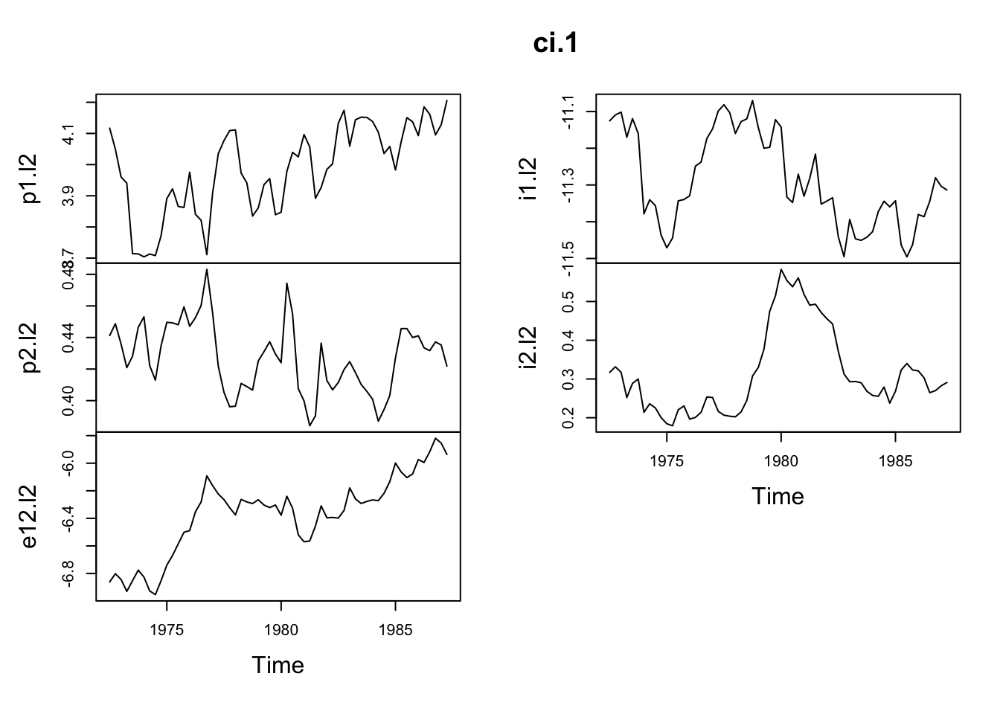
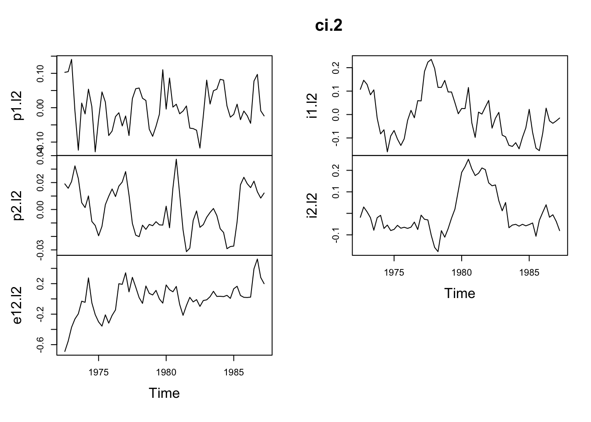
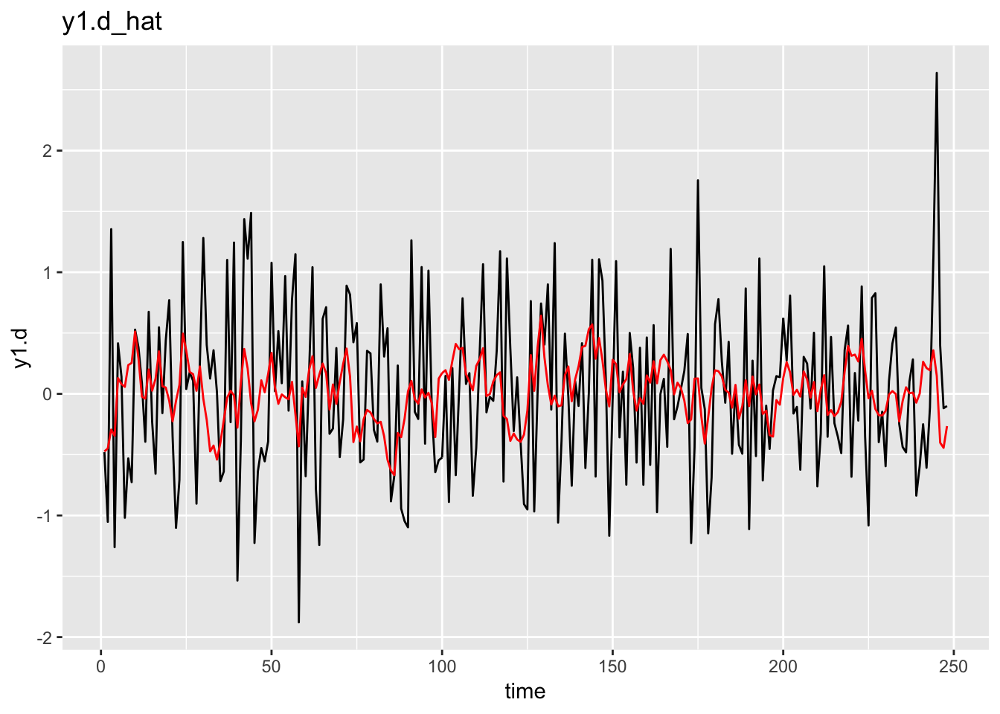
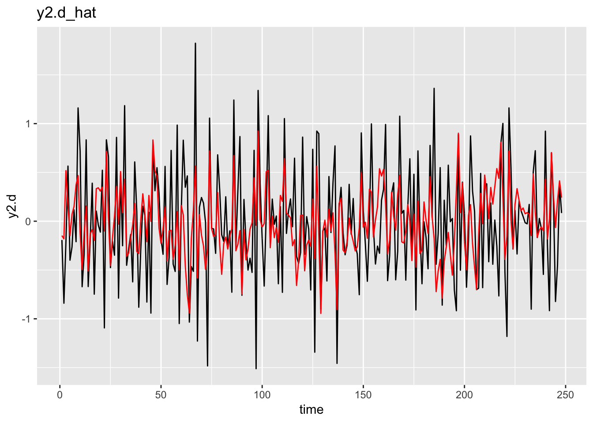
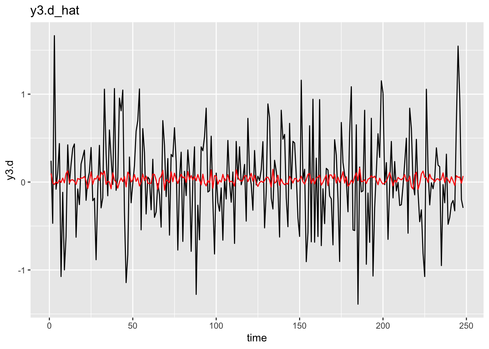

Chapter 10 Cointegración (Teoría)
Se probará la hipótesis \(H_1(r) : \Pi =\alpha\beta'\) es decir, si \(\Pi\) es de rango reducido. para ello utilizaremos la prueba del estadístico de la traza y del máximo eigenvalor.
library(urca)
data(UKpppuip)
names(UKpppuip)## [1] "p1" "p2" "e12" "i1" "i2" "doilp0" "doilp1"attach(UKpppuip)
dat1 <- cbind(p1,p2,e12,i1,i2)
dat2 <- cbind(doilp0,doilp1)
args('ca.jo')## function (x, type = c("eigen", "trace"), ecdet = c("none", "const",
## "trend"), K = 2, spec = c("longrun", "transitory"), season = NULL,
## dumvar = NULL)
## NULLH1 <- ca.jo(dat1, type='trace',K=2,season=4,dumvar=dat2)
H1.trace <- summary(ca.jo(dat1,type='trace',K=2,season=4,dumvar=dat2))
H1.eigen <- summary(ca.jo(dat1,type='eigen',K=2,season=4,dumvar=dat2))Considerando el estadístico del máximo eigenvalor, la hipótesis de no cointegración no puede ser rechazada, tal y como se observa en la siguiente tabla:
H1.eigen##
## ######################
## # Johansen-Procedure #
## ######################
##
## Test type: maximal eigenvalue statistic (lambda max) , with linear trend
##
## Eigenvalues (lambda):
## [1] 0.40672818 0.28538240 0.25415335 0.10230406 0.08287097
##
## Values of teststatistic and critical values of test:
##
## test 10pct 5pct 1pct
## r <= 4 | 5.19 6.50 8.18 11.65
## r <= 3 | 6.48 12.91 14.90 19.19
## r <= 2 | 17.59 18.90 21.07 25.75
## r <= 1 | 20.16 24.78 27.14 32.14
## r = 0 | 31.33 30.84 33.32 38.78
##
## Eigenvectors, normalised to first column:
## (These are the cointegration relations)
##
## p1.l2 p2.l2 e12.l2 i1.l2 i2.l2
## p1.l2 1.0000000 1.000000 1.000000 1.0000000 1.0000000
## p2.l2 -0.9086265 -1.143047 -1.272628 -2.4001444 -1.4528820
## e12.l2 -0.9321133 -3.363042 1.113631 1.1221619 -0.4805235
## i1.l2 -3.3746393 35.243576 2.746828 -0.4088865 2.2775510
## i2.l2 -1.8906210 -32.917370 -2.835714 2.9863624 0.7628011
##
## Weights W:
## (This is the loading matrix)
##
## p1.l2 p2.l2 e12.l2 i1.l2 i2.l2
## p1.d -0.06816507 0.0011795779 -0.002790218 0.001373599 -0.01333013
## p2.d -0.01773477 0.0001220008 -0.014159241 0.013178503 0.00755575
## e12.d 0.10065321 -0.0001432122 -0.055628059 -0.035400025 -0.04707585
## i1.d 0.03434737 -0.0041631581 -0.010363374 0.012309982 -0.02394672
## i2.d 0.05766426 0.0082830953 0.004821036 0.026984801 -0.01006765Sin embargo, el estadístico de la traza indica que existen 2 relaciones de cointegración.
H1.trace##
## ######################
## # Johansen-Procedure #
## ######################
##
## Test type: trace statistic , with linear trend
##
## Eigenvalues (lambda):
## [1] 0.40672818 0.28538240 0.25415335 0.10230406 0.08287097
##
## Values of teststatistic and critical values of test:
##
## test 10pct 5pct 1pct
## r <= 4 | 5.19 6.50 8.18 11.65
## r <= 3 | 11.67 15.66 17.95 23.52
## r <= 2 | 29.26 28.71 31.52 37.22
## r <= 1 | 49.42 45.23 48.28 55.43
## r = 0 | 80.75 66.49 70.60 78.87
##
## Eigenvectors, normalised to first column:
## (These are the cointegration relations)
##
## p1.l2 p2.l2 e12.l2 i1.l2 i2.l2
## p1.l2 1.0000000 1.000000 1.000000 1.0000000 1.0000000
## p2.l2 -0.9086265 -1.143047 -1.272628 -2.4001444 -1.4528820
## e12.l2 -0.9321133 -3.363042 1.113631 1.1221619 -0.4805235
## i1.l2 -3.3746393 35.243576 2.746828 -0.4088865 2.2775510
## i2.l2 -1.8906210 -32.917370 -2.835714 2.9863624 0.7628011
##
## Weights W:
## (This is the loading matrix)
##
## p1.l2 p2.l2 e12.l2 i1.l2 i2.l2
## p1.d -0.06816507 0.0011795779 -0.002790218 0.001373599 -0.01333013
## p2.d -0.01773477 0.0001220008 -0.014159241 0.013178503 0.00755575
## e12.d 0.10065321 -0.0001432122 -0.055628059 -0.035400025 -0.04707585
## i1.d 0.03434737 -0.0041631581 -0.010363374 0.012309982 -0.02394672
## i2.d 0.05766426 0.0082830953 0.004821036 0.026984801 -0.01006765Peor aún, existe la posiblidad de una tercera combinación lineal estacionaria debido a la cercanía entre los igenvectores 2 y 3.
H1@lambda## [1] 0.40672818 0.28538240 0.25415335 0.10230406 0.08287097Para generar una decisión final acerca del orden de integración, debemos observar varios aspectos como las matrices \(\hat{\alpha}\) y \(\hat{\beta}\) así como las relaciones de cointegración \(\hat{\beta}'y_t\) y aquellas que son corregidas por las influecnias de corto plazo \(\hat{\beta}'R_{1t}\). Para obtener las tablas similares a las reportadas en el paper de Johansen y Joselius, las matrices fueron normalizadas respectivamente:
beta <- H1@V
beta[,2] <- beta[,2]/beta[4,2]
beta[,3] <- beta[,3]/beta[4,3]
beta## p1.l2 p2.l2 e12.l2 i1.l2 i2.l2
## p1.l2 1.0000000 0.02837397 0.3640563 1.0000000 1.0000000
## p2.l2 -0.9086265 -0.03243276 -0.4633082 -2.4001444 -1.4528820
## e12.l2 -0.9321133 -0.09542285 0.4054245 1.1221619 -0.4805235
## i1.l2 -3.3746393 1.00000000 1.0000000 -0.4088865 2.2775510
## i2.l2 -1.8906210 -0.93399632 -1.0323596 2.9863624 0.7628011Y la matriz alpha es la siguiente
alpha <- H1@PI%*%solve(t(beta))
alpha## p1.l2 p2.l2 e12.l2 i1.l2 i2.l2
## p1.d -0.06816507 0.041572544 -0.007664249 0.001373599 -0.01333013
## p2.d -0.01773477 0.004299743 -0.038893000 0.013178503 0.00755575
## e12.d 0.10065321 -0.005047310 -0.152800708 -0.035400025 -0.04707585
## i1.d 0.03434737 -0.146724578 -0.028466405 0.012309982 -0.02394672
## i2.d 0.05766426 0.291925899 0.013242558 0.026984801 -0.01006765Se puede observar que los valores de \(\hat{\alpha}_{i.2}\) para \(i=1,2,3\) son cercanos a cero para el segundo vector de cointegración, por lo que la pequeña estimación del eigenvalor \(\lambda_2\) se puede atribuir a que estos valores se encuentran justo en la frontera de la no estacionariedad impactando la prueba de hipótesis.
Además Johanses y Joselius investigaron de manera gráfica las relaciones de cointegración, ya que si en efecto existen dos relaciones de cointegración \((r=2)\) entonces estas deberían observarse como un proceso estacionario. Sin embargo, debido las influencias de corto plazo que influyen en el proceso de estimación, los autores decidieron también analizarlas.
beta1 <- cbind(beta[,1:2], H1@V[,3:5])
ci.1 <- ts((H1@x%*%beta1)[-c(1,2),],start=c(1972,3),end=c(1987,2),frequency = 4)
ci.2 <- ts((H1@RK%*%beta1),start=c(1972,3),end=c(1987,2),frequency = 4)plot(ci.1)
plot(ci.2)
Basado en las pruebas estadísticas, los elementos de la matriz \(\hat{\alpha}\) y la tendencia de las relaciones de cointegración, Johansen y Joselius decidieron mantener la hipótesis de que el grado de cointegración es \(r=2\)
set.seed(12345)
e1 <- rnorm(250, 0, 0.5)
e2 <- rnorm(250, 0, 0.5)
e3 <- rnorm(250, 0, 0.5)
u1.ar1 <- arima.sim(model = list(ar=0.75),
innov = e1, n=250)
u2.ar1 <- arima.sim(model = list(ar=0.3),
innov = e2, n=250)
y3 <- cumsum(e3)
y1 <- 0.8 * y3 + u1.ar1
y2 <- -0.3 * y3 + u2.ar1
y.mat <- data.frame(y1,y2,y3)
vecm <- ca.jo(y.mat)
jo.results <- summary(vecm)
vecm.r2 <- cajorls(vecm, r=2)
class(jo.results)## [1] "sumurca"
## attr(,"package")
## [1] "urca"slotNames(jo.results)## [1] "classname" "test.name" "testreg" "teststat" "cval"
## [6] "bpoint" "signif" "model" "type" "auxstat"
## [11] "lag" "H" "A" "lambda" "pval"
## [16] "V" "W" "P"vecm.r2$beta## ect1 ect2
## y1.l2 1.0000000 0.0000000
## y2.l2 0.0000000 1.0000000
## y3.l2 -0.7328534 0.2951962vecm.r2$rlm##
## Call:
## lm(formula = substitute(form1), data = data.mat)
##
## Coefficients:
## y1.d y2.d y3.d
## ect1 -0.331293 0.064612 0.012682
## ect2 0.094473 -0.709385 -0.009165
## constant 0.168371 -0.027019 0.025255
## y1.dl1 -0.227677 0.027012 0.068158
## y2.dl1 0.144452 -0.715607 0.040487
## y3.dl1 0.123467 -0.290828 -0.075251summary(vecm.r2$rlm)## Response y1.d :
##
## Call:
## lm(formula = y1.d ~ ect1 + ect2 + constant + y1.dl1 + y2.dl1 +
## y3.dl1 - 1, data = data.mat)
##
## Residuals:
## Min 1Q Median 3Q Max
## -1.4471 -0.4862 -0.0256 0.4474 2.4896
##
## Coefficients:
## Estimate Std. Error t value Pr(>|t|)
## ect1 -0.33129 0.06319 -5.243 3.44e-07 ***
## ect2 0.09447 0.10950 0.863 0.389101
## constant 0.16837 0.05047 3.336 0.000982 ***
## y1.dl1 -0.22768 0.08080 -2.818 0.005234 **
## y2.dl1 0.14445 0.09129 1.582 0.114870
## y3.dl1 0.12347 0.10530 1.173 0.242135
## ---
## Signif. codes: 0 '***' 0.001 '**' 0.01 '*' 0.05 '.' 0.1 ' ' 1
##
## Residual standard error: 0.6587 on 242 degrees of freedom
## Multiple R-squared: 0.1165, Adjusted R-squared: 0.0946
## F-statistic: 5.318 on 6 and 242 DF, p-value: 3.57e-05
##
##
## Response y2.d :
##
## Call:
## lm(formula = y2.d ~ ect1 + ect2 + constant + y1.dl1 + y2.dl1 +
## y3.dl1 - 1, data = data.mat)
##
## Residuals:
## Min 1Q Median 3Q Max
## -1.47003 -0.29237 -0.01239 0.33676 1.53785
##
## Coefficients:
## Estimate Std. Error t value Pr(>|t|)
## ect1 0.06461 0.04723 1.368 0.172543
## ect2 -0.70938 0.08184 -8.668 6.41e-16 ***
## constant -0.02702 0.03772 -0.716 0.474462
## y1.dl1 0.02701 0.06039 0.447 0.655043
## y2.dl1 -0.71561 0.06823 -10.489 < 2e-16 ***
## y3.dl1 -0.29083 0.07870 -3.695 0.000271 ***
## ---
## Signif. codes: 0 '***' 0.001 '**' 0.01 '*' 0.05 '.' 0.1 ' ' 1
##
## Residual standard error: 0.4923 on 242 degrees of freedom
## Multiple R-squared: 0.3326, Adjusted R-squared: 0.3161
## F-statistic: 20.1 on 6 and 242 DF, p-value: < 2.2e-16
##
##
## Response y3.d :
##
## Call:
## lm(formula = y3.d ~ ect1 + ect2 + constant + y1.dl1 + y2.dl1 +
## y3.dl1 - 1, data = data.mat)
##
## Residuals:
## Min 1Q Median 3Q Max
## -1.40655 -0.30401 -0.01374 0.32107 1.69270
##
## Coefficients:
## Estimate Std. Error t value Pr(>|t|)
## ect1 0.012682 0.050764 0.250 0.803
## ect2 -0.009165 0.087966 -0.104 0.917
## constant 0.025255 0.040542 0.623 0.534
## y1.dl1 0.068158 0.064910 1.050 0.295
## y2.dl1 0.040487 0.073338 0.552 0.581
## y3.dl1 -0.075251 0.084594 -0.890 0.375
##
## Residual standard error: 0.5292 on 242 degrees of freedom
## Multiple R-squared: 0.01173, Adjusted R-squared: -0.01277
## F-statistic: 0.4788 on 6 and 242 DF, p-value: 0.8239Donde la beta del objeto vecm.r2 se obtiene de la siguiente manera:
tmp_beta <- vecm@V[,1:2]
pre_s <- diag(2)
st <- cbind(pre_s, c(0,0))
beta_c <- tmp_beta%*%solve(st%*%tmp_beta)# y1.d_hat
hat <- as.data.frame(vecm.r2$rlm$fitted.values[,1])
colnames(hat) <- c('y1.d_hat')
obs <- as.data.frame(vecm.r2$rlm$model$`z@Z0`[,1])
colnames(obs) <- c('y1.d')
ajuste <- cbind(obs,hat)
ajuste <- ajuste %>%
mutate(time=row_number())
ggplot(ajuste)+
geom_line(aes(time,y1.d))+
geom_line(aes(time,y1.d_hat), color='red')+
ggtitle('y1.d_hat')
# y2.d_hat
hat <- as.data.frame(vecm.r2$rlm$fitted.values[,2])
colnames(hat) <- c('y2.d_hat')
obs <- as.data.frame(vecm.r2$rlm$model$`z@Z0`[,2])
colnames(obs) <- c('y2.d')
ajuste <- cbind(obs,hat)
ajuste <- ajuste %>%
mutate(time=row_number())
ggplot(ajuste)+
geom_line(aes(time,y2.d))+
geom_line(aes(time,y2.d_hat), color='red')+
ggtitle('y2.d_hat')
# y3.d_hat
hat <- as.data.frame(vecm.r2$rlm$fitted.values[,3])
colnames(hat) <- c('y3.d_hat')
obs <- as.data.frame(vecm.r2$rlm$model$`z@Z0`[,3])
colnames(obs) <- c('y3.d')
ajuste <- cbind(obs,hat)
ajuste <- ajuste %>%
mutate(time=row_number())
ggplot(ajuste)+
geom_line(aes(time,y3.d))+
geom_line(aes(time,y3.d_hat), color='red')+
ggtitle('y3.d_hat')
Analicemos los objetos output de un ca.jo
Z0: Object of class “matrix”: The matrix of the differenced series.
#vecm
head(vecm@Z0)## y1.d y2.d y3.d
## [1,] -0.4794131 -0.1922064 0.24235792
## [2,] -1.0522604 -0.8403053 -0.46898616
## [3,] 1.3541820 -0.2094376 1.66536665
## [4,] -1.2606834 0.5650305 -0.08147273
## [5,] 0.4155807 -0.3992869 0.11022789
## [6,] 0.1428918 -0.2635745 0.43810541head(diff(vecm@x[,1]))[-1]## [1] -0.4794131 -1.0522604 1.3541820 -1.2606834 0.4155807Z1: Object of class “matrix”: The regressor matrix, except for the lagged variables in levels.
head(vecm@Z1)## constant y1.dl1 y2.dl1 y3.dl1
## [1,] 1 -1.3386618 0.8801562 -1.23346932
## [2,] 1 -0.4794131 -0.1922064 0.24235792
## [3,] 1 -1.0522604 -0.8403053 -0.46898616
## [4,] 1 1.3541820 -0.2094376 1.66536665
## [5,] 1 -1.2606834 0.5650305 -0.08147273
## [6,] 1 0.4155807 -0.3992869 0.11022789ZK: Object of class “matrix”: The matrix of the lagged variables in levels.
head(vecm@ZK)## y1.l2 y2.l2 y3.l2
## [1,] 2.2583477 0.19939792 -0.7101619
## [2,] 0.9196859 1.07955410 -1.9436313
## [3,] 0.4402729 0.88734767 -1.7012733
## [4,] -0.6119875 0.04704239 -2.1702595
## [5,] 0.7421945 -0.16239519 -0.5048928
## [6,] -0.5184889 0.40263534 -0.5863656head(vecm@x[,1])## [1] 2.2583477 0.9196859 0.4402729 -0.6119875 0.7421945 -0.5184889GAMMA: Object of class “matrix”: The coeffecient matrix of Z1.
vecm@GAMMA## constant y1.dl1 y2.dl1 y3.dl1
## y1.d 0.23923393 -0.22926059 0.14319319 0.1114252
## y2.d -0.05551169 0.02764891 -0.71510124 -0.2859867
## y3.d 0.11515655 0.06614925 0.03889071 -0.0905275R0: Object of class “matrix”: The matrix of residuals from the regressions in differences.
head(vecm@R0)## R0.y1.d R0.y2.d R0.y3.d
## [1,] -0.6904635 -0.08037954 0.16940277
## [2,] -1.0705514 -0.87294513 -0.44518760
## [3,] 1.3567145 -0.59827432 1.70442968
## [4,] -1.1485490 0.78386750 -0.07149617
## [5,] 0.2704663 -0.22409425 0.12573125
## [6,] 0.1881747 -0.37170924 0.40727514Estos se obtienen de la siguiente manera para y1.d
obs <- vecm@Z0[,1]
tmp <- lm(obs ~ vecm@Z1)
head(tmp$residuals)## 1 2 3 4 5 6
## -0.6904635 -1.0705514 1.3567145 -1.1485490 0.2704663 0.1881747RK: Object of class “matrix”: The matrix of residuals from the regression in lagged levels.
head(vecm@RK)## RK.y1.l2 RK.y2.l2 RK.y3.l2
## [1,] -0.7880642 1.4228006 -3.990389
## [2,] -1.7167073 1.7503912 -4.438872
## [3,] -2.5056460 1.2466576 -4.578191
## [4,] -2.3680375 0.6996849 -4.002224
## [5,] -2.2307412 0.8807273 -3.096962
## [6,] -2.7678351 0.9845930 -3.265588obs <- vecm@ZK[,1]
tmp <- lm(obs ~ vecm@Z1)
head(tmp$residuals)## 1 2 3 4 5 6
## -0.7880642 -1.7167073 -2.5056460 -2.3680375 -2.2307412 -2.7678351Codigo para obtener los p-values de la relacion de cointegración:
library("vars")
data("Canada")
summary(Canada)## e prod rw U
## Min. :928.6 Min. :401.3 Min. :386.1 Min. : 6.700
## 1st Qu.:935.4 1st Qu.:404.8 1st Qu.:423.9 1st Qu.: 7.782
## Median :946.0 Median :406.5 Median :444.4 Median : 9.450
## Mean :944.3 Mean :407.8 Mean :440.8 Mean : 9.321
## 3rd Qu.:950.0 3rd Qu.:410.7 3rd Qu.:461.1 3rd Qu.:10.607
## Max. :961.8 Max. :418.0 Max. :470.0 Max. :12.770###################################################
### VECM
###################################################
vecm.p3 <- summary(ca.jo(Canada, type = "trace", ecdet = "trend", K = 3, spec = "transitory"))
vecm.p2 <- summary(ca.jo(Canada, type = "trace", ecdet = "trend", K = 2, spec = "transitory"))
###################################################
### VECM r = 1
###################################################
vecm <- ca.jo(Canada[, c("rw", "prod", "e", "U")], type = "trace", ecdet = "trend", K = 3, spec = "transitory")
vecm.r1 <- cajorls(vecm, r = 1)
##
## Calculation of t-values for alpha and beta
##
alpha <- coef(vecm.r1$rlm)[1, ]
names(alpha) <- c("rw", "prod", "e", "U")
alpha## rw prod e U
## -0.084814510 -0.011994081 -0.015606039 -0.008659911beta <- vecm.r1$beta
beta## ect1
## rw.l1 1.00000000
## prod.l1 0.54487553
## e.l1 -0.01299605
## U.l1 1.72657188
## trend.l1 -0.70918872resids <- resid(vecm.r1$rlm)
N <- nrow(resids)
sigma <- crossprod(resids) / N
## t-stats for alpha (calculated by hand)
alpha.se <- sqrt(solve(crossprod(cbind(vecm@ZK %*% beta, vecm@Z1)))[1, 1] * diag(sigma))
names(alpha.se) <- c("rw", "prod", "e", "U")
alpha.t <- alpha / alpha.se
alpha.t## rw prod e U
## -5.7117416 -0.9186147 -2.1579440 -1.4868989## Differ slightly from coef(summary(vecm.r1$rlm))
## due to degrees of freedom adjustment
coef(summary(vecm.r1$rlm))## Response rw.d :
## Estimate Std. Error t value Pr(>|t|)
## ect1 -0.08481451 0.01586043 -5.3475545 1.032919e-06
## constant 55.46912512 10.27534117 5.3982758 8.457630e-07
## rw.dl1 -0.01208216 0.10704961 -0.1128651 9.104560e-01
## prod.dl1 -0.07449278 0.12959959 -0.5747917 5.672491e-01
## e.dl1 -0.63408419 0.32375145 -1.9585524 5.409412e-02
## U.dl1 0.06313697 0.39823872 0.1585405 8.744810e-01
## rw.dl2 -0.15738805 0.10657625 -1.4767647 1.441606e-01
## prod.dl2 -0.25194030 0.13324238 -1.8908420 6.272600e-02
## e.dl2 0.08119694 0.34085520 0.2382153 8.124002e-01
## U.dl2 -0.23000852 0.40783183 -0.5639788 5.745457e-01
##
## Response prod.d :
## Estimate Std. Error t value Pr(>|t|)
## ect1 -0.011994081 0.01394591 -0.86004279 0.392660259
## constant 8.274808112 9.03500121 0.91586132 0.362839920
## rw.dl1 0.004706801 0.09412762 0.05000446 0.960259241
## prod.dl1 0.234441189 0.11395558 2.05730322 0.043331256
## e.dl1 -0.246543876 0.28467130 -0.86606509 0.389371704
## U.dl1 -0.979868038 0.35016719 -2.79828628 0.006608993
## rw.dl2 -0.190264297 0.09371139 -2.03032194 0.046071053
## prod.dl2 -0.029520300 0.11715865 -0.25196859 0.801793287
## e.dl2 -0.580472750 0.29971045 -1.93677850 0.056752354
## U.dl2 -0.128100838 0.35860231 -0.35722257 0.721984808
##
## Response e.d :
## Estimate Std. Error t value Pr(>|t|)
## ect1 -0.015606039 0.007724419 -2.02035108 4.712059e-02
## constant 10.331308141 5.004343822 2.06446809 4.262776e-02
## rw.dl1 -0.078491214 0.052135793 -1.50551490 1.366279e-01
## prod.dl1 0.200953060 0.063118190 3.18375830 2.158925e-03
## e.dl1 0.821557783 0.157674917 5.21045326 1.766876e-06
## U.dl1 0.003379404 0.193952049 0.01742391 9.861473e-01
## rw.dl2 -0.095834953 0.051905254 -1.84634398 6.901044e-02
## prod.dl2 0.048272523 0.064892318 0.74388655 4.593999e-01
## e.dl2 -0.459693071 0.166004862 -2.76915427 7.165319e-03
## U.dl2 -0.103414812 0.198624129 -0.52065584 6.042265e-01
##
## Response U.d :
## Estimate Std. Error t value Pr(>|t|)
## ect1 -0.008659911 0.006220787 -1.39209252 1.682397e-01
## constant 5.687831831 4.030200359 1.41130250 1.625226e-01
## rw.dl1 0.017262536 0.041987062 0.41113942 6.822087e-01
## prod.dl1 -0.138916466 0.050831629 -2.73287454 7.918064e-03
## e.dl1 -0.646846115 0.126981984 -5.09399914 2.775841e-06
## U.dl1 -0.191125426 0.156197425 -1.22361445 2.251431e-01
## rw.dl2 0.080354366 0.041801399 1.92228891 5.858215e-02
## prod.dl2 -0.002908953 0.052260406 -0.05566266 9.557669e-01
## e.dl2 -0.019741041 0.133690425 -0.14766234 8.830278e-01
## U.dl2 -0.262685288 0.159960039 -1.64219319 1.049722e-01## t-stats for beta
beta.se <- sqrt(diag(kronecker(solve(crossprod(vecm@RK[, -1])),
solve(t(alpha) %*% solve(sigma) %*% alpha))))
beta.t <- c(NA, beta[-1] / beta.se)
names(beta.t) <- rownames(vecm.r1$beta)
beta.t## rw.l1 prod.l1 e.l1 U.l1 trend.l1
## NA 0.90044324 -0.01917236 1.19328037 -2.56940604